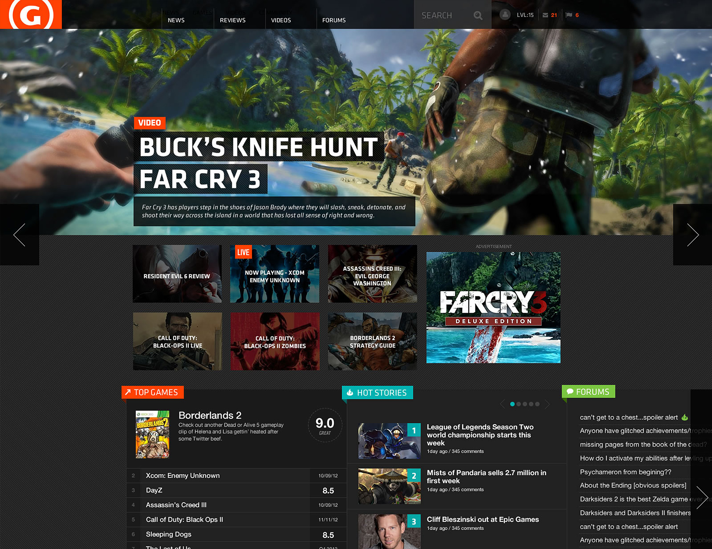
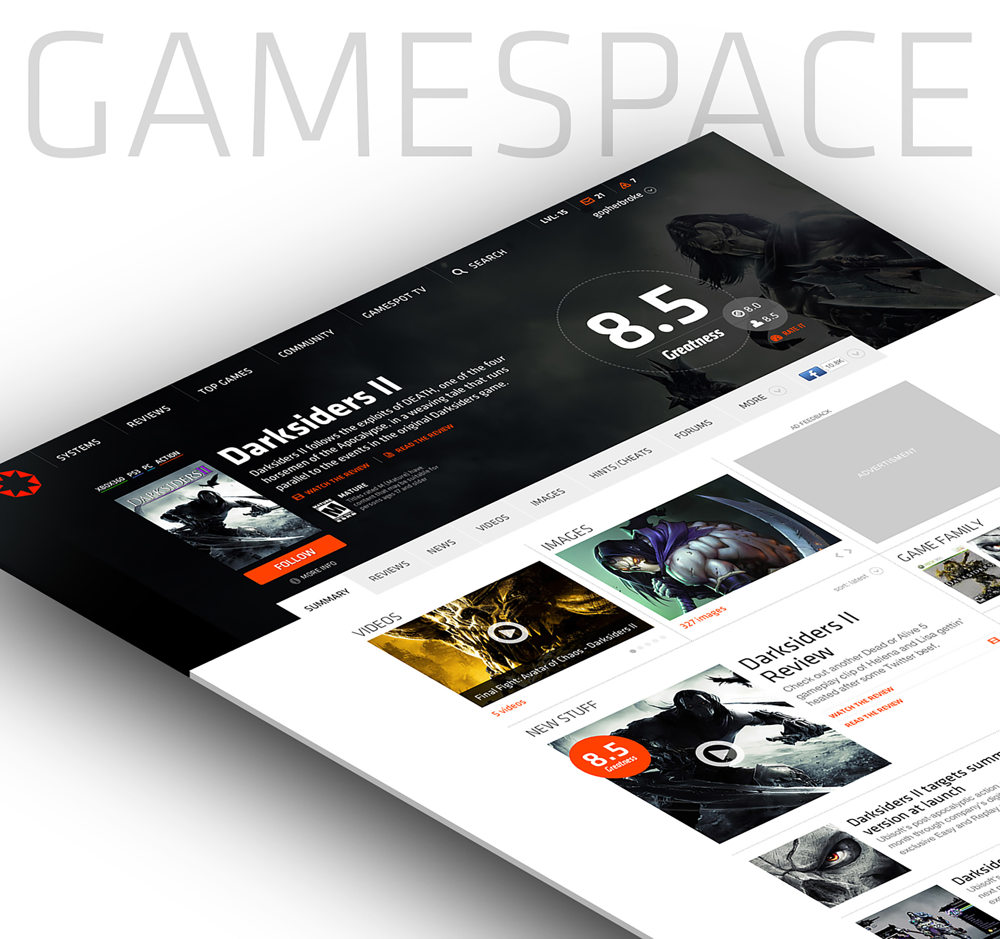
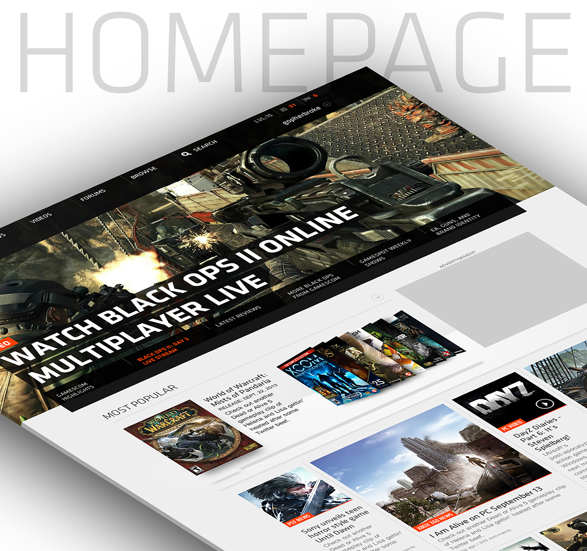
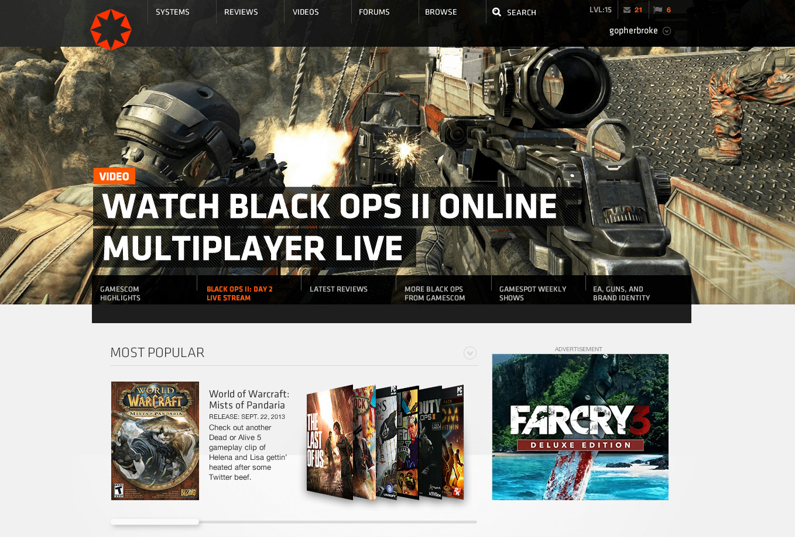
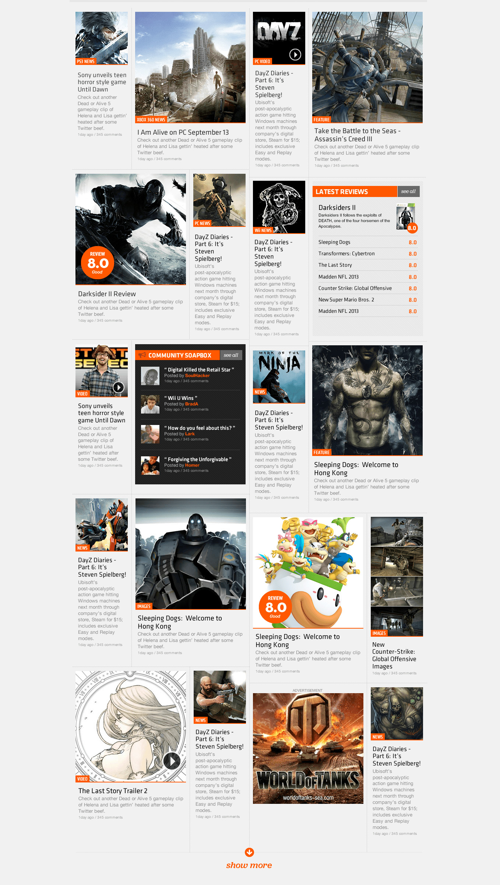
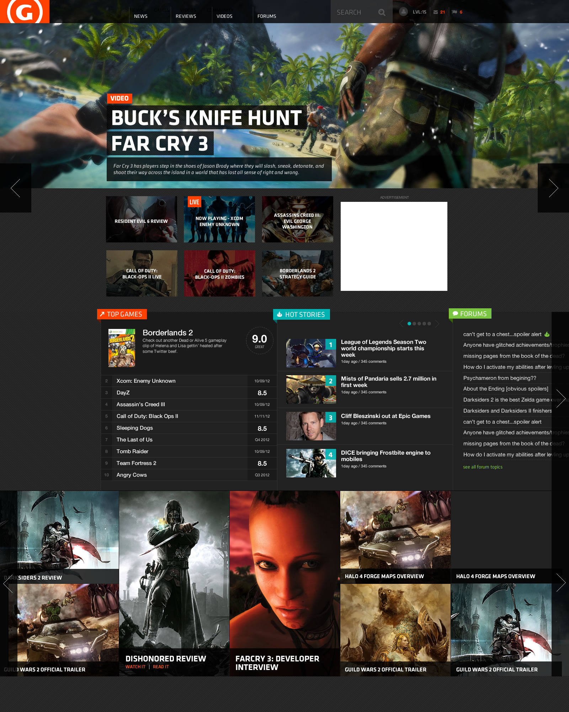
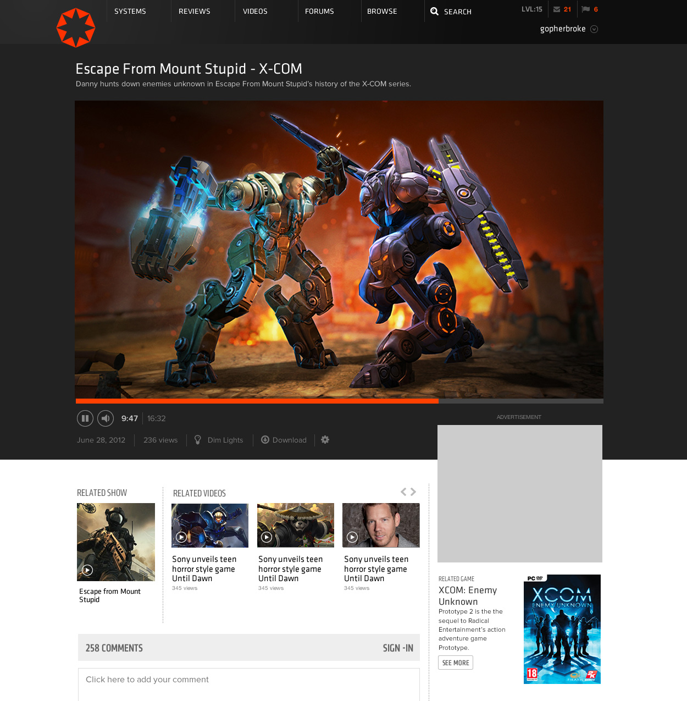
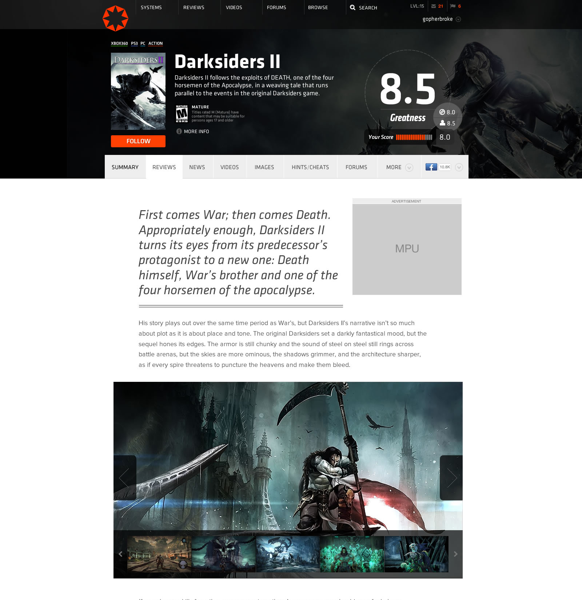
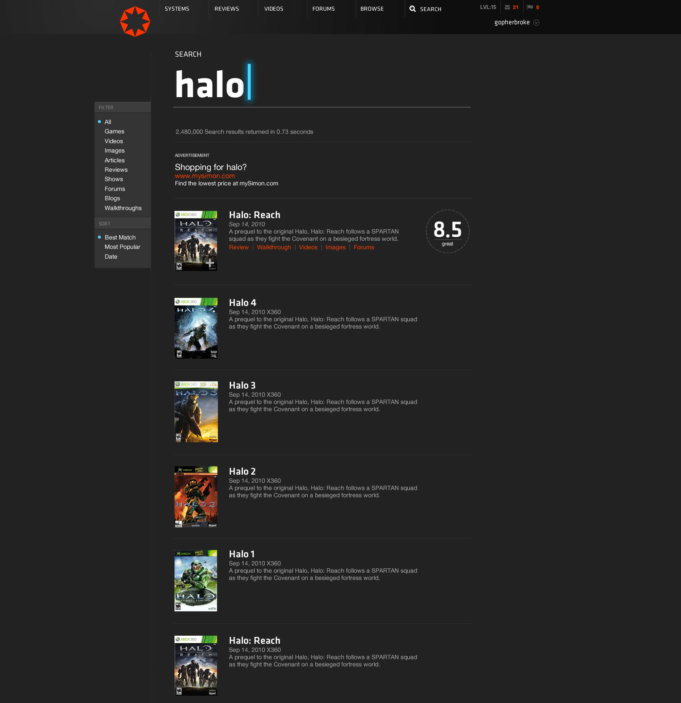
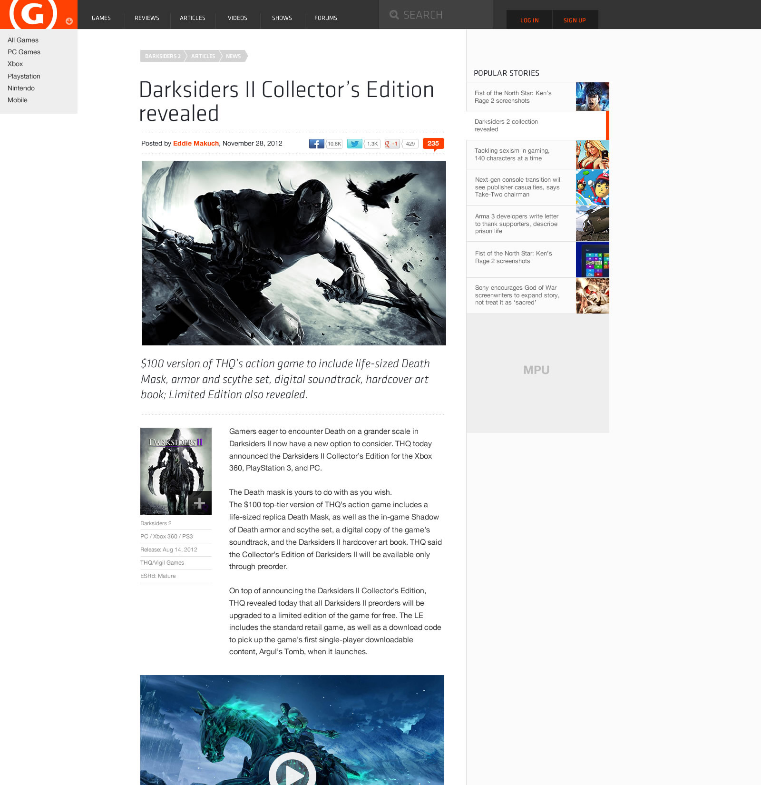

After a decade of working on one of the most popular gaming websites of all time I had the opportunity to redesign GameSpot as my parting final project.

Site Redesign
It had been a while since the last site redesign. The games and entertainment group had changed leadership and design was embedded with engineering. GameSpot was inline for a dramatic change which would require design and engineering to collaborate in a more agile methodology. Prior site design and builds had used a more waterfall processes with design leading the charge. Wanting to incorporate modern web technology would require a more collaborative partnership with engineering. I was anxious to explore layouts that would break traditional grid patterns and showcase content in a more dynamic way.
Rebrand?
Some time prior to the site redesign project there was an intensive rebrand project that was a collaboration between our team (product/editorial design) and marketing design. In an attempt to revive my contribution, the octa-star, I reintroduced it as an option.
The goal was to modernize the brand while retaining the core elements that made GameSpot recognizable. The octa-star was a nod to the original logo, but with a more contemporary twist. It was designed to be versatile, working well across various platforms and devices and introduced a standalone mark.
While it still carried strong brand equity, the existing logo was feeling dated. Stuck is a skeumorphic box along with the existing site style. Simply flattening the style may have been enough, but it still lacked a standalone mark and modern typeface.
Breaking the typeface out of the enclosure and replacing the 'O' with the mark was enough to modernize it while still referencing the original.
I was excited to finally introduce custom fonts. We had been stuck in web-safe mode for an eternity and finally updating to a modern typefaces served from a CDN was long overdue.

The Gamespace
... is the single most important page across the site. The primary goal during our concepting phase was to evolve the display of content over the life-cycle of the game. In it's existing form the gamespace merely displayed the latest content in compartmentalized modules. We instead opted to evolve it into a feed sorted by recency while floating the most trafficked content up top (images, videos, review). The core gamespace navigation remained above the fold and the feed content could be emphasized in layout and scale depending on popularity. This concept of visual hierarchy would be thematic throughout the redesign process.


The Homepage
The Homepage is the biggest impact marketing opportunity for advertisers. The existing model relied upon full page takeovers and skins. This came at a cost to brand and user experience, leaving the enitre page aesthetic open to advertiser whim. Moving to an integrated ad/content model had a less detrimental effect. If an advertiser required a larger footprint, the hero unit could be leveraged and paired with standard ad units to satistfy their needs optically.
Below the fold is where I wanted to test a dramatic change in content display. Rather than showing content in a singular stacked feed by recency, I was proposing to add dynamic display logic that sorted content by interest and activity. Using a masonry framework that presented content in various tile sizes would allow us to add hierarchy to stories and create a more visual interest.

Alt Homepage
The dynamic content grid was a dramatic departure from our standard chronological, content sorted layout, so as an alternative I provided a design that focused on sorting content in buckets allowing users to digest conent in a more focused view. A more traditional content feed would follow further down the page.





The Rest
The homepage and the gamespace were simply the beginning of a huge redesign effort. Video, search, articles, reviews, comments, forums, profile, community, all these pages would need updating. Not only these pages, but admin and tools would also be addressed.
I would leave CBSi before the redesign launch, but was happy to see many of the concepts and design patterns I introduced make it into the final build.